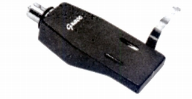
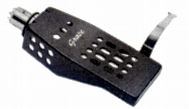
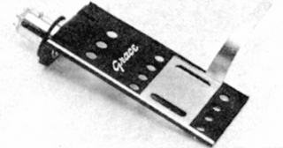
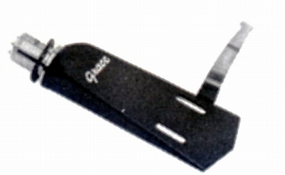
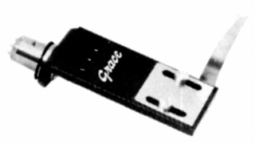
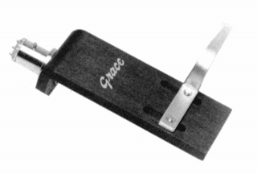
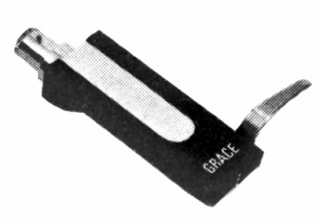
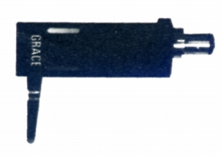

ヘッドシェル
HS-1

■価格 1,200円
■重量 9.9g
■備考 アルミプレス加工
価格は1973年頃のもの。
1975年頃は1,500円。
HS-2

■価格 1,600円
■重量 9.3g
■備考 アルミプレス加工
軽量アーム用。
価格は1973年頃のもの。
1975年頃は1,850円。
HS-3

■価格 1,200円
■重量 6.8g
■備考 アルミプレス加工
HS-4

■価格 1,600円
■重量 7g
■備考 アルミプレス加工
価格は1973年頃のもの。
1975年頃は1,850円。
HS-5

■価格 1,850円
■重量 12g
■備考 アルミプレス加工
HS-6

■価格 4,960円
■重量 11g
■備考 カーボンファイバー+特殊マトリクス製ハイコンプレッション加工
価格は1977年頃のもの。
1987年頃には5,400円。
HS-7

■価格 2,960円
■重量 約14g（ビス除く）
■備考 硬質アルミ削り出し
シェル上部にはる共振防止用シート、3色（白・黒・茶）付属
価格は1979年頃のもの。
1987年頃には3,400円。
HS-8

■価格 2,000円
■重量 13.5g
■備考 アルミ引抜材
価格は1983年頃のもの。
1987年頃には2,400円。
グレースのインデックスへ